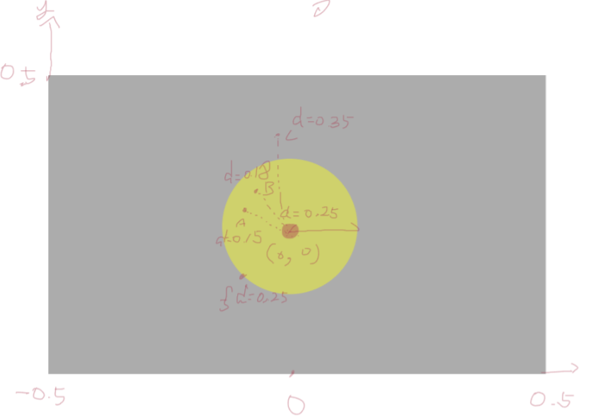
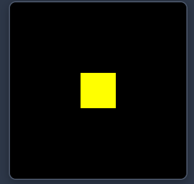
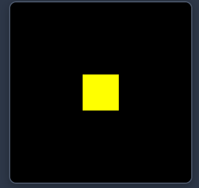
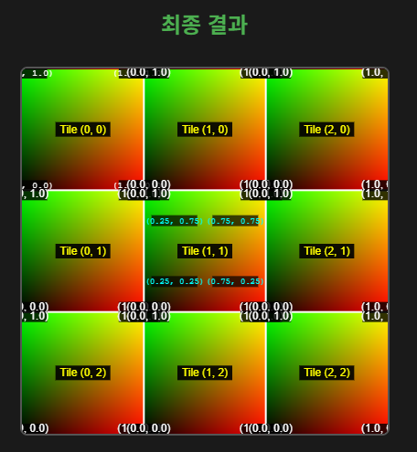

자주 사용하는 함수를 사용해보자.
학습 목표
아래 사이트는 기본 API Document 주소 입니다. 옆에 띄워주세요https://thebookofshaders.com/glossary/
1) step, smoothstep, fract, mod, abs, square, sqrt, sin, cos, tan, exp 그래프를 손으로 그려볼 수 있다.
float y 값에 원하는 아래 수식을 넣어보고 어떻게 그려지는지 확인하세용!
2) 그래프 정규화 영역은 -1 ~ 1 입니다.
좌표 정규화는 가장 기본적이고 중요한 내용입니다.
아래 내용을 테스트 해보시고 xy -4 ~ 4 정규화 하고 원점을 중앙으로 맞추어 보세요.
3) 스키아 좌표계는 Y 좌표가 반대 입니다.
이해를 돕기 위해 uv.y = 1.0 - uv.y; // Skia 좌표계 y축 반전 코드를 추가해 주세요
4) Uv += 값을 더하게 빼는 경우, 시각적으로 반대로 보입니다.
자주 사용하는 함수 및 그래프 ( 라이브러리 포함 )
- 1. 직선:
float y = p.x; - 3. Clamp 곡선 :
float y = clamp(p.x, 0, 1); - 4. Step (계단 그래프):
float y = step(0.5, p.x); //if (p.x < -0.3 && p.x > -0.5) y = .3; //if (p.x > 0.3 && p.x < 0.5) y = .6; - 4.1. SmoothStep:
float y = smoothstep(0.0, 1.0, p.x);
p.x = clamp(p.x, 0, 1);
float y = p.x * p.x * (3.0 - 2.0 * p.x); - 3. Fract 곡선 (톱니파 모양):
fract(-1.3) = -2.0 + 0.7float y = fract(sin(p.x);
fract(1.3) = 1.0 + 0.3 - 4. Floor :
p *= 3.0;
float y = floor(p.x); - 5. Dot :
p *= 3.0;
float y = dot(p.x, p.y);
// dot (vec2(a, b), vec2(c, d)) = a * c + b * d = 스칼라 값. <중요> // 그래프이상한데? - 4. mod:
float y = mod(p.x, 0.5); - 6. 절대값 곡선 (대칭):
float y = abs(p.x); - 7. 제곱 곡선:
float y = p.x * p.x; - 8. 제곱근:
float y = sqrt(p.x); - 2. 사인 곡선:
p.x *= 3.14;
float y = sin(p.x); - 9. 코사인:
p.x *= 3.14;
float y = cos(p.x); - 10. 탄젠트:
p.x *= 3.14;
float y = tan(p.x); - 5. 가우시안 곡선:
float y = exp(-p.x * p.x); - 11. Triangular Wave (지그재그):
float y = abs(fract(p.x) * 2.0 - 1.0);
좌표계 정규화 방법
-
Skia 좌표계는 Y축이 위에서 아래로 갈수록 커지기 때문에 y축 반전을 해준다.
- 0 - 1 정규화
uv = fragCoord / iResolution; uv.y = 1.0 - uv.y; // Skia 좌표계 y축 반전 float y = p.x; if (uv.x > .5) y = 0.; - -.5 ~ .5 정규화
uv = fragCoord / iResolution; uv.y = 1.0 - uv.y; // Skia 좌표계 y축 반전 uv -= .5; float y = p.x; if (uv.x > .3 || uv.x < -.3) y = 0.; - xy 종횡비 맞추기
uv = fragCoord / iResolution; uv.y *= iResolution.y / iResolution.x; uv.y = 1.0 - uv.y; // Skia 좌표계 y축 반전 uv -= .5; float y = p.x; if (uv.x > .3 || uv.x < -.3) y = 0.;
아래 코드는 자주 사용 될듯...
0 ~ 1 좌표계 정규화 --> uv = fragCoord / iResolution.xy;
종횡비 보정 --> uv.y *= iResolution.y / iResolution.x;
Skia y축 반전 --> uv.y = 1.0 - uv.y; // Skia 좌표계 y축 반전
원점으로 좌표계 정규화 --> uv -= .5;
SKSL 실습 코드
미리보기
CanvasKit 로딩 중...
패턴 만들기
학습 목표
패턴 모양일때 반복되는 구간의 x,y 값을 알 수 있다.(fract, floor)손으로 영역을 그려보자, 헷갈리는 경우 대표하는 픽셀만 구해서 생각하자
복잡한 코드를 분석하는 방법을 배울수 있다.
원과 사각형 코드를 수정해서 함수를 변경 해보세요 (step->smoothstep)
상수에 목숨걸지말자
코드 분석 방법
1) 정규화 파악 (0 ~ 1), (-0.5 ~ 0.5)2) 코드 분해해서 주석 처리
3) 간단한 함수로 바꾸어 보기 (smoothstep → step)
4) 경계를 파악하고 경계를 파악 후 그려보기
원 만들기
- 원리
 - 정규화
float2 uv = fragCoord / iResolution.xy; - 원을 만드는 코드 1
uniform float2 iResolution; float circle(in vec2 _st, in float _radius) { vec2 l = _st - vec2(0.5); return 1. - step(_radius, dot(l, l) * 2.0); } half4 main(float2 fragCoord) { float2 uv = fragCoord / iResolution.xy; float color = circle(uv, 0.3); return half4(color, color, color, 1.0); } - 원을 만드는 코드 2
uniform float2 iResolution; float circle(in vec2 _st, in float _radius) { float edge0 = _radius - (_radius * 0.01); float edge1 = _radius + (_radius * 0.01); return 1. - smoothstep(edge0, edge1, sqrt(dot(_st, _st))); } half4 main(float2 fragCoord) { float2 uv = fragCoord / iResolution.xy - .5; float color = circle(uv, 0.3); return half4(color, color, color, 1.0); } - 원을 만드는 코드 3
uniform float2 iResolution; float circle(in vec2 _st, in float _radius) { return 1. - smoothstep(_radius - (_radius * 0.01), _radius + (_radius * 0.01), dot(_st, _st) * 2.0); } half4 main(float2 fragCoord) { float2 uv = (fragCoord / iResolution.xy) - .5; float color = circle(uv, 0.3); return half4(color, color, color, 1.0); }
박스 만들기
- 벡터 연산 팁
float rect(vec2 pt, vec2 size, vec2 center) { vec2 dl = center - (size * 0.5); vec2 ur = center + (size * 0.5); vec2 result = step(dl, pt) * (1.0 - step(ur, pt)); return result.x * result.y; } uniform float2 iResolution; vec4 main(vec2 fragCoord) { vec2 uv = fragCoord / iResolution.xy; uv.y *= iResolution.y / iResolution.x; // 종횡비 보정 uv.y = 1.0 - uv.y; uv -= .5; // -.5 ~ .5 정규화 vec2 size = vec2(0.2, 0.2); vec2 center = vec2(0., 0.); vec3 color = vec3(1.0, 1.0, 0.0) * rect(uv, size, center); return vec4(color, 1.0); }

 

패턴 만들기
-

- 기본 패턴 만들기
uniform float2 iResolution; half4 main(float2 fragCoord) { float2 uv = (fragCoord / iResolution.xy); uv *= 3.0; uv = fract(uv); float3 color = float3(uv, 0.0); return half4(color, 1.0); } - 박스 패턴 만들기
- p.x * p.y를 출력하면, 둘다 1인 영역만 출력 !!
- 터틀 패턴 만들기
uniform float2 iResolution; const float PI = 3.141592; float2 rotate2D (vec2 _st, float _angle) { _st -= 0.5; _st = mat2(cos(_angle),-sin(_angle), sin(_angle),cos(_angle)) * _st; _st += 0.5; return _st; } float2 tile (vec2 _st, float _zoom) { _st *= _zoom; return fract(_st); } float2 rotateTilePattern(float2 _st){ // Scale the coordinate system by 2x2 _st *= 2.0; // Give each cell an index number // according to its position float index = 0.0; index += step(1., mod(_st.x, 2.0)); index += step(1., mod(_st.y, 2.0)) * 2.0; // | // 2 | 3 // | //-------------- // | // 0 | 1 // | // Make each cell between 0.0 - 1.0 _st = fract(_st); // Rotate each cell according to the index if(index == 1.0){ // Rotate cell 1 by 90 degrees _st = rotate2D(_st,PI * 0.5); } else if(index == 2.0){ // Rotate cell 2 by -90 degrees _st = rotate2D(_st,PI * -0.5); } else if(index == 3.0) { // Rotate cell 3 by 180 degrees _st = rotate2D(_st, PI); } return _st; } half4 main(float2 fragCoord) { vec2 st = fragCoord.xy / iResolution.xy; st = tile(st, 3.0); st = rotateTilePattern(st); // step(st.x,st.y) just makes a b&w triangles // but you can use whatever design you want. return half4(half3(step(st.x,st.y)), 1.0); } - Fractal, 회전,이동,스케일 행렬은 추후에
vec2 tile(vec2 _st, float _zoom) {
_st *= _zoom;
return fract(_st);
}
float box(vec2 _st, vec2 _size, float _smoothEdges){
_size = vec2(0.5) - _size * 0.5;
vec2 aa = vec2(_smoothEdges * 0.5);
vec2 uv = smoothstep(_size, _size + aa, _st);
uv *= smoothstep(_size, _size + aa, vec2(1.0) - _st);
return uv.x * uv.y;
}
uniform float2 iResolution;
half4 main(float2 fragCoord) {
vec2 st = fragCoord.xy / iResolution.xy;
vec3 color = vec3(0.0);
st = tile(st, 4.);
color = vec3(box(st, vec2(0.7), 0.01));
return vec4(color,1.0);
}
SKSL 실습 코드
미리보기
CanvasKit 로딩 중...